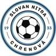

Tabuľky
Ročník 2026/27, poradie podľa Sportnetu.
V. liga Severozápad
A-mužstvo
| # | Tím | Z | V | R | P | Skóre | B |
|---|---|---|---|---|---|---|---|
| 1 | 15 | 10 | 3 | 2 | 30:15 | 33 | |
| 2 | 15 | 10 | 3 | 2 | 44:22 | 33 | |
| 3 | 15 | 10 | 1 | 4 | 29:12 | 31 | |
| 4 | 15 | 8 | 5 | 2 | 36:20 | 29 | |
| 5 | 15 | 8 | 4 | 3 | 35:20 | 28 | |
| 6 | 15 | 7 | 3 | 5 | 40:18 | 24 | |
| 7 | 15 | 7 | 3 | 5 | 23:18 | 24 | |
| 8 | 15 | 7 | 3 | 5 | 39:24 | 24 | |
| 9 | 15 | 6 | 5 | 4 | 30:20 | 23 | |
| 10 | 15 | 6 | 3 | 6 | 28:33 | 21 | |
| 11 | 15 | 5 | 3 | 7 | 18:33 | 18 | |
| 12 | 15 | 4 | 3 | 8 | 19:37 | 15 | |
| 13 | 15 | 3 | 3 | 9 | 20:40 | 12 | |
| 14 | 15 | 2 | 2 | 11 | 19:34 | 8 | |
| 15 | 15 | 2 | 2 | 11 | 8:35 | 8 | |
| 16 | 15 | 1 | 2 | 12 | 13:50 | 5 |
III. liga U19 ZsFZ
Starší dorast U19
| # | Tím | Z | V | R | P | Skóre | B |
|---|---|---|---|---|---|---|---|
| 1 | FC Baník Prievidza | 15 | 12 | 3 | 0 | 56:14 | 39 |
| 2 | 15 | 11 | 2 | 2 | 61:17 | 35 | |
| 3 | 15 | 11 | 1 | 3 | 35:14 | 34 | |
| 4 | 15 | 10 | 3 | 2 | 44:18 | 33 | |
| 5 | 15 | 9 | 1 | 5 | 44:21 | 28 | |
| 6 | 15 | 8 | 0 | 7 | 32:27 | 24 | |
| 7 | 15 | 7 | 3 | 5 | 32:23 | 24 | |
| 8 | 15 | 7 | 0 | 8 | 45:33 | 21 | |
| 9 | 15 | 6 | 1 | 8 | 30:36 | 19 | |
| 10 | 15 | 6 | 1 | 8 | 38:33 | 19 | |
| 11 | 15 | 5 | 2 | 8 | 21:33 | 17 | |
| 12 | 15 | 5 | 2 | 8 | 30:44 | 17 | |
| 13 | 15 | 4 | 4 | 7 | 33:29 | 16 | |
| 14 | 15 | 3 | 4 | 8 | 25:28 | 13 | |
| 15 | 15 | 1 | 3 | 11 | 23:61 | 6 | |
| 16 | 15 | 0 | 0 | 15 | 7:125 | 0 |
II. liga dorasteniek WU19
Staršie dorastenky U19 dievčatá
| # | Tím | Z | V | R | P | Skóre | B |
|---|---|---|---|---|---|---|---|
| 1 | 12 | 11 | 0 | 1 | 69:8 | 33 | |
| 2 | 12 | 10 | 1 | 1 | 47:13 | 31 | |
| 3 | 12 | 9 | 0 | 3 | 37:16 | 27 | |
| 4 | 12 | 5 | 3 | 4 | 31:19 | 18 | |
| 5 | 13 | 5 | 3 | 5 | 27:31 | 18 | |
| 6 | 13 | 2 | 5 | 6 | 26:43 | 11 | |
| 7 | 12 | 3 | 2 | 7 | 9:53 | 11 | |
| 8 | 13 | 2 | 0 | 11 | 12:42 | 6 | |
| 9 | 13 | 1 | 2 | 10 | 16:49 | 5 |
III. liga U17 ZsFZ
Mladší dorast U17
| # | Tím | Z | V | R | P | Skóre | B |
|---|---|---|---|---|---|---|---|
| 1 | 15 | 14 | 1 | 0 | 62:9 | 43 | |
| 2 | 15 | 13 | 0 | 2 | 80:8 | 39 | |
| 3 | FC Baník Prievidza | 15 | 11 | 0 | 4 | 51:19 | 33 |
| 4 | 15 | 9 | 2 | 4 | 39:24 | 29 | |
| 5 | 15 | 9 | 1 | 5 | 49:27 | 28 | |
| 6 | 15 | 8 | 3 | 4 | 34:20 | 27 | |
| 7 | 15 | 8 | 2 | 5 | 44:39 | 26 | |
| 8 | 15 | 6 | 2 | 7 | 30:32 | 20 | |
| 9 | 15 | 6 | 2 | 7 | 37:40 | 20 | |
| 10 | 15 | 5 | 2 | 8 | 20:31 | 17 | |
| 11 | 15 | 5 | 2 | 8 | 22:34 | 17 | |
| 12 | 15 | 5 | 0 | 10 | 28:44 | 15 | |
| 13 | 15 | 4 | 2 | 9 | 27:36 | 14 | |
| 14 | 15 | 3 | 3 | 9 | 36:57 | 12 | |
| 15 | 15 | 2 | 2 | 11 | 14:82 | 8 | |
| 16 | 15 | 0 | 0 | 15 | 5:76 | 0 |
II. liga U15 ZsFZ
Starší žiaci U15 A
| # | Tím | Z | V | R | P | Skóre | B |
|---|---|---|---|---|---|---|---|
| 1 | 15 | 13 | 1 | 1 | 59:8 | 40 | |
| 2 | 15 | 13 | 1 | 1 | 52:7 | 40 | |
| 3 | OK Častkovce | 15 | 12 | 3 | 0 | 85:7 | 39 |
| 4 | 15 | 11 | 0 | 4 | 51:20 | 33 | |
| 5 | 15 | 9 | 2 | 4 | 68:14 | 29 | |
| 6 | 15 | 9 | 1 | 5 | 32:22 | 28 | |
| 7 | 15 | 6 | 4 | 5 | 28:32 | 22 | |
| 8 | 15 | 6 | 2 | 7 | 21:19 | 20 | |
| 9 | 15 | 6 | 2 | 7 | 22:29 | 20 | |
| 10 | 15 | 5 | 5 | 5 | 30:18 | 20 | |
| 11 | 15 | 6 | 1 | 8 | 25:23 | 19 | |
| 12 | 15 | 4 | 1 | 10 | 21:33 | 13 | |
| 13 | 15 | 3 | 2 | 10 | 19:51 | 11 | |
| 14 | 15 | 1 | 3 | 11 | 14:71 | 6 | |
| 15 |  TJ Slovan Nitra-Chrenová | 15 | 1 | 2 | 12 | 18:80 | 5 |
| 16 | MŠK Thermál Veľký Meder | 15 | 0 | 0 | 15 | 9:120 | 0 |
III. liga U15 ZsFZ
Starší žiaci U15 B
| # | Tím | Z | V | R | P | Skóre | B |
|---|---|---|---|---|---|---|---|
| 1 | 11 | 9 | 2 | 0 | 48:5 | 29 | |
| 2 | 11 | 8 | 0 | 3 | 22:16 | 24 | |
| 3 | 11 | 6 | 4 | 1 | 35:8 | 22 | |
| 4 | 11 | 6 | 1 | 4 | 39:21 | 19 | |
| 5 | OK Častkovce B | 11 | 5 | 2 | 4 | 32:16 | 17 |
| 6 | 11 | 5 | 2 | 4 | 27:36 | 17 | |
| 7 | 11 | 5 | 1 | 5 | 27:25 | 16 | |
| 8 | 11 | 5 | 1 | 5 | 38:35 | 16 | |
| 9 | 11 | 3 | 0 | 8 | 14:41 | 9 | |
| 10 | 11 | 3 | 0 | 8 | 19:46 | 9 | |
| 11 | 11 | 2 | 1 | 8 | 23:43 | 7 | |
| 12 | 11 | 2 | 0 | 9 | 9:41 | 6 |
II. liga žiačok WU15
Staršie žiačky U15 dievčatá
| # | Tím | Z | V | R | P | Skóre | B |
|---|---|---|---|---|---|---|---|
| 1 | 12 | 10 | 1 | 1 | 61:9 | 31 | |
| 2 | 12 | 9 | 2 | 1 | 52:10 | 29 | |
| 3 | 13 | 6 | 2 | 5 | 33:42 | 20 | |
| 4 | 12 | 6 | 1 | 5 | 28:23 | 19 | |
| 5 | 13 | 5 | 1 | 7 | 45:38 | 16 | |
| 6 | 13 | 5 | 1 | 7 | 30:32 | 16 | |
| 7 | 12 | 4 | 2 | 6 | 17:19 | 14 | |
| 8 | 12 | 2 | 5 | 5 | 20:28 | 11 | |
| 9 | 13 | 1 | 1 | 11 | 14:99 | 4 |
II. liga U13 ZsFZ
Mladší žiaci U13 A
| # | Tím | Z | V | R | P | Skóre | B |
|---|---|---|---|---|---|---|---|
| 1 | 15 | 14 | 0 | 1 | 78:18 | 42 | |
| 2 | 15 | 13 | 1 | 1 | 89:13 | 40 | |
| 3 | 15 | 13 | 1 | 1 | 84:17 | 40 | |
| 4 | 15 | 13 | 0 | 2 | 92:12 | 39 | |
| 5 | OK Častkovce | 15 | 8 | 2 | 5 | 61:66 | 26 |
| 6 | 15 | 7 | 2 | 6 | 56:35 | 23 | |
| 7 | 15 | 7 | 1 | 7 | 54:31 | 22 | |
| 8 | 15 | 7 | 0 | 8 | 43:48 | 21 | |
| 9 | 15 | 6 | 2 | 7 | 46:37 | 20 | |
| 10 | 15 | 6 | 2 | 7 | 54:36 | 20 | |
| 11 | 15 | 6 | 0 | 9 | 48:41 | 18 | |
| 12 | 15 | 5 | 1 | 9 | 46:34 | 16 | |
| 13 | 15 | 3 | 3 | 9 | 21:45 | 12 | |
| 14 | 15 | 3 | 0 | 12 | 28:91 | 9 | |
| 15 | MŠK Thermál Veľký Meder | 15 | 1 | 0 | 14 | 19:163 | 3 |
| 16 | TJ Slovan Nitra-Chrenová | 15 | 0 | 1 | 14 | 17:149 | 1 |
III. liga U13 ZsFZ
Mladší žiaci U13 B
| # | Tím | Z | V | R | P | Skóre | B |
|---|---|---|---|---|---|---|---|
| 1 | 11 | 10 | 1 | 0 | 60:7 | 31 | |
| 2 | 11 | 9 | 1 | 1 | 49:14 | 28 | |
| 3 | 11 | 6 | 1 | 4 | 30:30 | 19 | |
| 4 | 11 | 6 | 0 | 5 | 34:30 | 18 | |
| 5 | 11 | 5 | 2 | 4 | 43:16 | 17 | |
| 6 | 11 | 5 | 1 | 5 | 27:30 | 16 | |
| 7 | 11 | 5 | 1 | 5 | 36:38 | 16 | |
| 8 | 11 | 4 | 2 | 5 | 28:41 | 14 | |
| 9 | OK Častkovce B | 11 | 4 | 0 | 7 | 27:41 | 12 |
| 10 | 11 | 3 | 3 | 5 | 28:35 | 12 | |
| 11 | 11 | 3 | 0 | 8 | 17:44 | 9 | |
| 12 | 11 | 0 | 0 | 11 | 11:64 | 0 |
IV. liga mladších žiakov U13 ObFZ Senica
Mladší žiaci U13 C
| # | Tím | Z | V | R | P | Skóre | B |
|---|---|---|---|---|---|---|---|
| 1 | 13 | 13 | 0 | 0 | 78:11 | 39 | |
| 2 | 12 | 9 | 0 | 3 | 69:21 | 27 | |
| 3 | 13 | 8 | 0 | 5 | 75:36 | 24 | |
| 4 | 13 | 8 | 0 | 5 | 59:39 | 24 | |
| 5 | 13 | 8 | 0 | 5 | 69:39 | 24 | |
| 6 | 13 | 7 | 2 | 4 | 61:29 | 23 | |
| 7 | 13 | 6 | 2 | 5 | 37:34 | 20 | |
| 8 | 12 | 4 | 0 | 8 | 29:63 | 12 | |
| 9 | 12 | 3 | 0 | 9 | 28:35 | 9 | |
| 10 | 13 | 1 | 0 | 12 | 12:127 | 3 | |
| 11 | 13 | 1 | 0 | 12 | 21:104 | 3 |
III. liga prípraviek U9 ObFZ Senica
Prípravka U9 B
| # | Tím | Z | V | R | P | Skóre | B |
|---|---|---|---|---|---|---|---|
| 1 | 14 | 14 | 0 | 0 | 264:40 | 42 | |
| 2 | 14 | 12 | 0 | 2 | 179:58 | 36 | |
| 3 | 14 | 10 | 0 | 4 | 153:79 | 30 | |
| 4 | 14 | 8 | 1 | 5 | 106:95 | 25 | |
| 5 | 14 | 7 | 1 | 6 | 100:147 | 22 | |
| 6 | 14 | 7 | 0 | 7 | 104:123 | 21 | |
| 7 | 14 | 7 | 0 | 7 | 97:85 | 21 | |
| 8 | 14 | 2 | 0 | 12 | 72:167 | 6 | |
| 9 | 14 | 2 | 0 | 12 | 64:154 | 6 | |
| 10 | 14 | 0 | 0 | 14 | 33:224 | 0 |
U11, U10, U9 A: prípravky hrajú bez tabuľky.